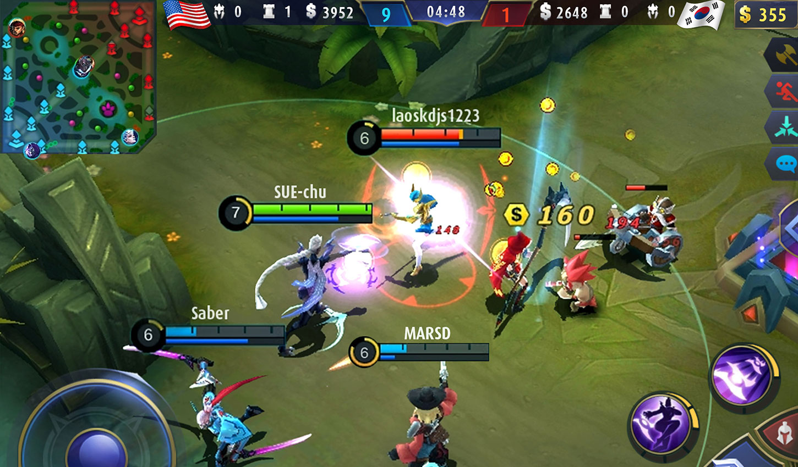

Guide
The things that beginners players should know when they start playing Mobile Legends: Bang Bang (How to become a Good Player)

Challenge, connect, and have fun with your friends with this action game, choose your own hero and build a perfect team with your friends! You will battle with other team which involve killing and destroying opponent’s tower in ten minutes match. The controls are simple, you just need two fingers to become a master in this game. Good luck soldiers!
Playing Mobile Legends: Bang Bang is certainly a pretty fun thing to fill your spare time. In addition, the game mode is fast enough, you can also train strategy, concentration and other things. For those of you who are just trying to play Mobile Legends. Here I will give some tips and tricks to play Mobile Legends for beginners(newbie, noob). Mobile Legend is not a game done for pros. Many of the beginners who come to try the DotA game. But sometimes even beginner players bother his team members.
MOBA games have been arounds for years, but have mostly been available for the PC platform. The arrival of Mobile Legends: Bang Bang created a world-wide phenomenon as it successfully brought the MOBA genre to Android and iOS devices. If you are new to this game, it follows the classic five-versus-five format of the ganre. in this game, you will team up with other four players and you will have to pick one hero to control. The goal is to defeat the enemy teams by destroying their base(crystal) at the opposite end of the map. The team that destroys their opponent's base first wins the game. They do so by using yheir heroes and abilities, working together to take down minions, creeps, turrets and opposing heroes. Moreover, you might be overwhelmed by the numbers of heroes, abilities, and items to learn. Heroes have different skills and stats, which you can improve further by buying equipments. Later I will explain about the equipments and their effects.
There are so many people that are having troubles to be a better player. Now I will be convering quite a lot of tips and tricks that will help improve your gameplay. Whether you're a complete beginner or if you've already played a few games, this guide will have some tips for you to improve in the game.
- Adequate Connection
- Check the Hero Rotation
- Master the Map
- View the Map
- Team Fight
- Try to stick together with teammates
- Don't stop farming
- Don't team fight when overnumbered
- Split Push
- Let a player get carried
- Relax
1. Adequate Connection
One of the main challenges of playing online strategy games is internet connection. But most beginners do not really care about this.
Before playing, make sure your internet connection is in good shape. This is to avoid lag in the game. Lag in the game can make you AFK (Away From Keyboard) so you will be bothering a teammate who is struggling. And after finishing the match, sometimes you will be punished by the system for being AFK. For example: you need to wait 3 minutes to restart a new game. Or sometimes, the other players will report you and you will lose your credit score. According to the rule of the MLBB, if your credit score is less than 90, you cannot play rank matches.
2. Check the Hero Rotation

One of the important things that will help you in amy MOBA game is familiarizing yourself with multiple heroes. Sure. playing with your favourite heros helps you get more kills but it won't necessarily win you more battles. Since there are different roles in Mobile Legends, you need to be able to adjust to your team composition. You cannot stubbornly pick who you want and expect your team win. Remember the battle begins ata the hero selection screen.
Because of that reason, it is a good idea to try to master different types of heroes. This can be challenging at first, since you won't have access to all the heroes.
3. Master the Map
Knowing every nook and cranny of the map is important for any player. You won't have time to keep checking the mini-mapjust to see where you are going. Check out the major area of the map below to get a better idea where you need to go.
Lanes
There are three lanes in the game: top(typically suited for Fighters), middle (typically suited for Assassins) and bottom (typically suited for Mages or Tanks). Minions who spawn from each base will travel down these lanes. The lanes are guarded by turrets that you will need to take down in order to advance towards the enemy base. Once you've passed the turrets you focus your fire on the enemy base.
But project NEXT brings a new laning system to Mobile Legends. In the latest update, the top and bottom lanes will provide experience and gold bonus for specific types of heroes. The top lane, for example, is better suited for marksmen because it will give them more gold to help them farm equipment faster. Meanwhile, the bottom lane is more key than ever for tank and fighter types.
Jungle
The jungle is an area on the map which is between the three lane. The point of the jungle is to have a method of gaining gold and experience for your hero (expecially for assassin type of heroes) faster.
In Project NEXT, only the heros that bring the retribution battle spell can buy the jungle items such as Star Shard, Beast Killer, Raptor Machete.In this link, I am going to explain everything related to jungle for the jungler role in Mobile Legends: Bang Bang.
4. View the Mini Map
Begineers need to check the mini-map that given in top left conner.Check it every few seconds with a glace. But many new players are playing without looking at the mini map.By viewing the mini map, there are some things we can know:
- Estimated enemies are located
- Attack the lord
- Attack the turtle
- You can help your friends
- Determine when to attack and defend
- And many more
5. Team fights
This point is really really important. This is because victories in Mobile Legends are made from team fights. Every successful team fight is a step to winning the game. However, if you are playing with random people, it is harder to get everyone to participate in a team fight. If someone goes off on their ow, don't go chasing after them, instead just stay with the bigger pack of plaers to increase your chances to win.Now I want you to show some videos about how team fight is important.
6. Try to stick Together with your teammates
When the enemy team seems to be unstoppable, the worst thing you could do is have your entire team running around on their own. The only way you are going to be able to win in team fights is if you are all together.
There are few reasons why sticking together can help you to pull back games. Firstly, if you stick together, you won't have to worry about any of your teammates getting killed off by the enemy team. Secondly, you may actually be able to win the team fight if you all work together coherently.
7. Don't stop Farming
Once the laning phase is over, it is very easy to get distracted with pushing towers and killing other players, but never stop faming!
If you are always tapping the auto-attack button whilst on lane, you'll always be farming minions. This will allow you to catch up with farm and gold and increase your experience and buy more items to turn the game back around.
There's only so much of an advantage the enemy team can have - once they have max build, more gold won't help them, so this is where it's very important to carry on farming so that you can close the power level between you and tour enemy.
8. Don't Team Fight When Outnumbered
This goes hand in hand with our first tip. If you notice that your entire team isn't together and the enemy team tries to engage, you and the rest of your team should back out. You definitely do not want to fight when outnumbered in Mobile Legends, even if you're winning the game.
If you're losing the game, you will be pinished even harder for fighting whilst outnumbered. Instead, what you should be doing is looking for an opportunity where the enemy team is split up and then outnumber the enemies in a team fight. If this happens, you'll have a better chance at killing chance at killing the enemy players.
Whilst the enemy player are down, you'll have more time to push towers or to catch up by farming more minions.
9. Split Push
If you're playing a hero that's very tanky or a hero that can easily escape from enemy players, you should try to push another lane whilst the rest of the players in the game are distracted. If you are able to take down more towers whilst the enemies are distracted, you can easily turn the game in your favor.
Split pushing is quite difficult to master – not only do you need to be able to know the best time to start split pushing, you also need to be able to escape from enemies when they notice that you are split pushing.
The best time to split push is when a player on the enemy team has died – once this has happened, you can attack towers and not worry about the rest of your team being outnumbered in a team fight. If all enemy players are up, it may be best to stick with your team until you manage to get some kills in a team fight.
10. Let a player get carried
One thing that's verey important in Mobile Legends is to make sure either your marksman or an assassin gets enough kills. If they do not get enough kills, they won't be able to get enough gold to win in team fights.
The marksman and the assassin will be the main damage dealers, so if you're not playing the marksman or an assassin, make sure you leave as many kills for these two players. The more kills these players get, the better chance you'll have at winning team fights.
If you are playing the marksman role or you're playing an assassin hero, you need to be trying to get as many kills as possible. Stick together with your team and work extra hard to get the last hit on enemies so that you secure the kill and not anybody else.
If you focus all of the kills in a game on either an assassin or the marksman, you'll easily be able to turn the game around in your favor, so long as the playere with the most kills is protected by the rest of the team during team fights.
11. Relax
Finally, our last tips is to make sure to remind yourself to relax. If you start to get stressed out or angry because you're losing, you'll start to lose focus and it will only be ever more difficult to turn the game around in your favor.
It’s also important to remember that you can’t win every single game. Sometimes, the team you’re playing with might not be good enough. Sometimes, the enemy team will have too much of a lead on your team for you to be able to pull it back.
All you can do is try your best given the circumstances you’re put in.
Top 10 Mobile Legends tips for Beginner|MLBB
Things that should not do in the game
The principle in the MOBA game is that you have to develop the hero you use as quickly as possible in order to dominate the match. The stronger the Hero in the team, the greater the chance to win. Most important, you must act according to the roles and Hero Mobile Legends you use. Don't make mistakes like the one below!
Killed
One of the most fatal losses in early games is being killed within 2 minutes. If killed by enemies, turrets , or monsters, Friend Gamers will lose precious seconds. Your Hero development will stop, while other players have reached the next level.
So, we must avoid death in the early game. Try to avoid battles that aren’t worth it. Also, don’t be too eager to kill your opponent. If trapped, you could be killed. Pay attention to your timing and position.
AFK
AFK is an abbreviation of away from keyboard. AFK in the middle of the game is very unyielding. If one of the teamates is AFK, the rest will be far behind other players. They will lose time to collect gold and exp. The loss of one player is very big influence on the team. Mental teams will be very disturbed if there are people who AFK.
You will also get sanctions from Moonton, you know, because AFK is one of the condemned players' behavior. That's why we need to check the stability of the internet first before starting the games. Do not force yourself to play when the internet network is bad. You not only harm others, but also yourself.
Farming
Farming is very important in early games for the hyper players because it can add exp and gold. In project NEXT, this can be done alone to farm the jungle monsters. You must be careful.If you are killed, you will be greatly harmed. This video will explain about how to farm faster that the enemies.
War in the early game
War in the early game is actually not recommended, especially if you are in an unbalanced position. Another story if the enemy is cornered and it is possible to ‘be caught’.
At the beginning of the game, the Hero is not yet equipped with qualified items and skills. So, you try not to start a war at the beginning of the game. If you are killed at the beginning, you will be left behind by your opponent.
If the opposing team starts a war, try to keep your team uninhibited and back off regularly. Keep your distance while looking around.
Summary
Well, friends, what kinds of mistakes do you make most often in early games when you played Mobile Legends? Hopefully, this tips will help you to become a good player. So that sums up our guide on what we should do when we play with solo or when we play with a team. I hope that this information has proven to be useful!